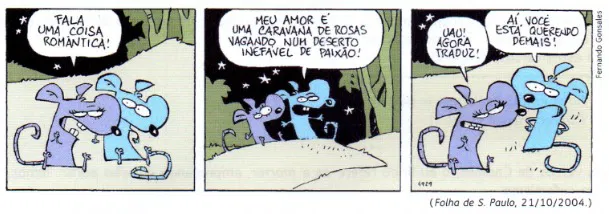
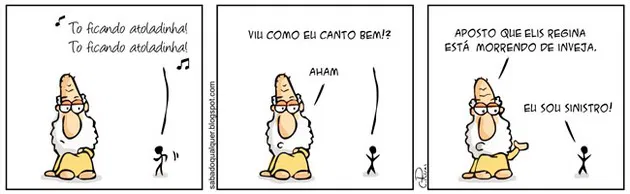
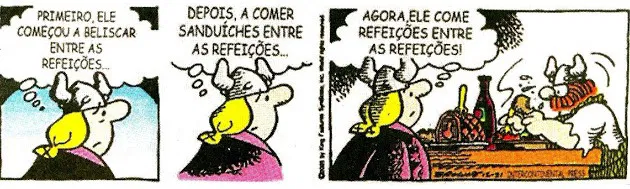
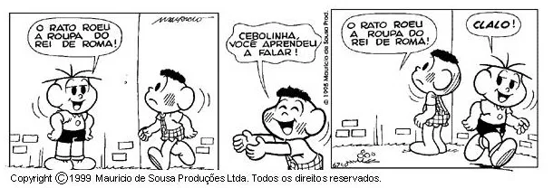

Figuras de Linguagem
O que é?
Figuras de Linguagem, também chamadas de figuras de estilo, são recursos estilísticos usados para dar maior ênfase à comunicação e torná-la mais bonita.
Tipos
Dependendo da sua função, elas são classificadas em:
1-Figuras de palavras ou semânticas- estão associadas ao significado das palavras. Exemplos:
metáfora, comparação, metonímia, catacrese, sinestesia e perífrase.
2-Figuras de pensamento- trabalham com a combinação de ideias e pensamentos. Exemplos: hipérbole,
eufemismo, litote, ironia, personificação, antítese, paradoxo, gradação e apóstrofe.
3-Figuras de sintaxe ou construção- interferem na estrutura gramatical da frase. Exemplos:
elipse, zeugma, hipérbato, polissíndeto, assíndeto, anacoluto, pleonasmo, silepse e anáfora.
4-Figuras de som ou harmonia- estão associadas à sonoridade das palavras. Exemplos: aliteração,
paronomásia, assonância e onomatopeia.
Figuras de palavras - Metáfora
A metáfora representa uma comparação de palavras com significados diferentes e cujo conectivo de comparação (como, tal qual) fica subentendido na frase.
Na tirinha acima, "uma caravana de rosas vagando num deserto inefável" é uma metáfora do amor.
Figuras de pensamento - Hipérbole
A hipérbole corresponde ao exagero de uma ideia feito de maneira intencional.
Na tirinha acima, a expressão "morrendo de inveja" é uma hipérbole.
Figuras de sintaxe - Elipse
A elipse é a omissão de uma palavra que se identifica de forma fácil.
Na segunda imagem do quadrinho, notamos o uso da elipse: "depois (ele começou) a comer sanduíches entre as refeições...".
Figuras Sonoras - Aliteração
A aliteração é a repetição de sons consonantais.
Na tirinha acima, ocorre aliteração, porque a letra "r" é repetida muitas vezes em "O rato roeu a roupa do rei de Roma."